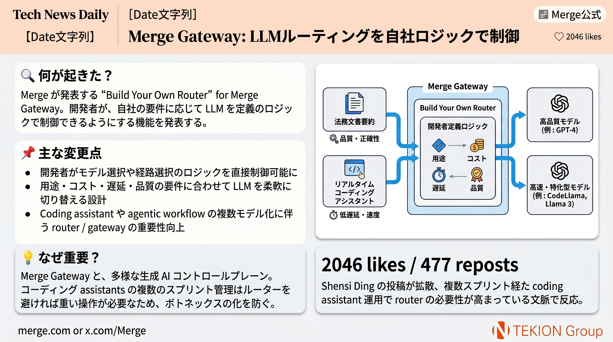

🔧 AIインフラ/LLMルーティング · Merge / Shensi Ding
Merge Gateway: LLMルーティングを自社ロジックで制御

Merge は Merge Gateway の Build Your Own Router を発表し、LLM の選択ロジックを開発者が自社要件に合わせて定義できるようにした。公式ブログでは、法務文書の要約とリアルタイム coding assistant では最適なモデルが違う例を挙げ、用途別 routing の必要性を説明している。
- Merge Gateway は production AI の control plane として位置づけられている
- Build Your Own Router により、モデル選択や経路選択の logic を開発者が制御できる
- 用途・コスト・遅延・品質に応じて LLM を切り替える前提の設計
- coding assistant / agentic workflow が複数モデル前提になり、router / gateway の重要性が上がっている